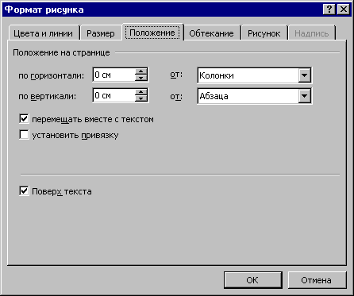

Выберите команду Автофигура, Рисунок, Надпись или Объект в меню Формат, а затем вкладку Положение.
Существует два способа привязать объект к абзацу, вместе с которым он должен перемещаться:

Рисунок 8.1
Чтобы выделенный объект перемещался вместе с абзацем, к которому он привязан, установите флажок Перемещать вместе с текстом.
Чтобы выделенный объект всегда находился на одной странице с абзацем, к которому он привязан, установите флажок Установить привязку.
Назад | Содержание | Вперед